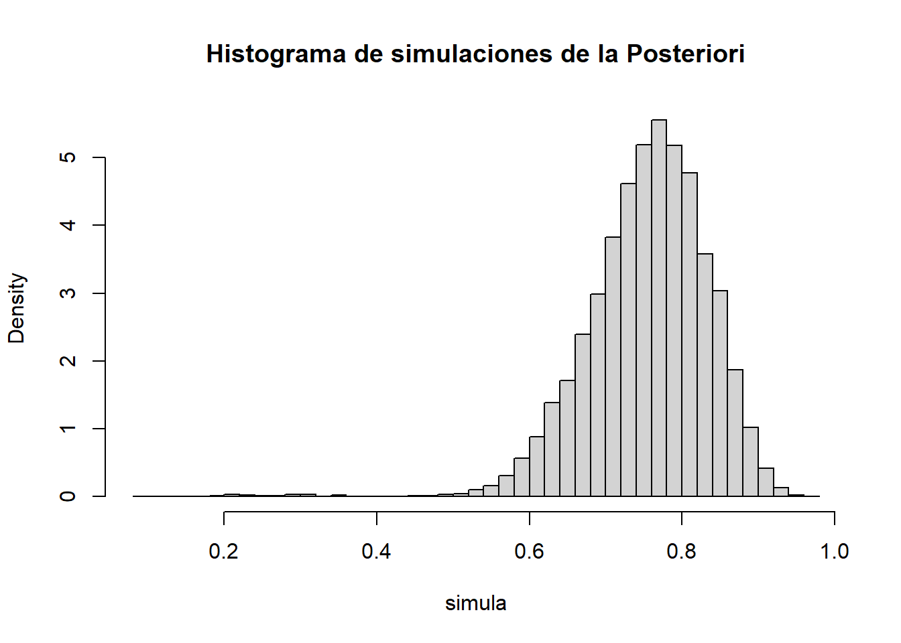
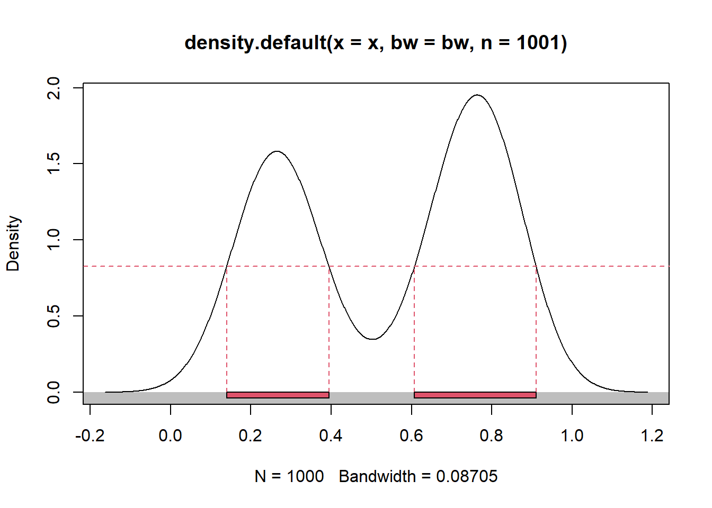

n <- 17
Y <- 10
a_1 <- 1 # \alpha_1
b_1 <- 23 # \beta_1
a_2 <- 15 # \alpha_2
b_2 <- 1 # \beta_2
C_1 <- gamma(n+1)*gamma(a_1+b_1)*gamma(Y+a_1)*gamma(n-Y+b_1)/(gamma(n-Y+1)*gamma(Y+1)*gamma(n+a_1+b_1)*gamma(a_1)*gamma(b_1))
C_2 <- gamma(n+1)*gamma(a_2+b_2)*gamma(Y+a_2)*gamma(n-Y+b_2)/(gamma(n-Y+1)*gamma(Y+1)*gamma(n+a_2+b_2)*gamma(a_2)*gamma(b_2))Metodos bayesianos - Ayudantia 8
Metodos bayesianos
Ayudantía 8
Ejercicio 1
Se tiene una caja con dos casillas que contienen chas rojas y blancas, y se gana si, al extraer una cha de manera aleatoria desde la caja, la ficha extraida es roja.
Un mago ha anunciado las probabilidades de extraer una ficha roja en cada compartimento, indicando que, en una de las casillas, la probabilidad de obtener una ficha roja es 0.04 mientras que, en la otra casilla, esta probabilidad es de 0.875.
Además, es importante destacar que el mago menciona que la probabilidad de escoger la casilla 1 o 2 es la misma.
Sin embargo, un amigo que ha presenciado el acto de magia, sospecha que existe una variabilidad en la información dada por el mago indicando que las probabilidades mencionadas corresponden a promedios o medias pero que poseen una varianza.
Según él, una casilla tiene una probabilidad de 0.04 de poseer una ficha roja con una varianza de 0.00007, mientras que la otra posee una probabilidad de 0.875 con una varianza de 0.0032.
Además, el mago menciona que de las 17 personas que participaron en el acto, sólo 10 personas sacaron una ficha roja.
Determine la probabilidad de ganar, teniendo en cuenta tanto las probabilidades dadas por el mago como la información adicional proporcionada por el amigo.
Considere el siguiente modelo de mezcla:
Verosimilitud \(Y|\theta \sim \textup{Bin}(n,\theta)\), Priori \(\theta \sim \frac{1}{2}\textup{Beta}(1,23) + \frac{1}{2}\textup{Beta}(15,1)\)
- Encuentre la distribución a posteriori.
Usaremos la fórmula conocida para obtener una posteriori proveniente de una priori que es mezcla de distribuciones: \(p^{(1)}(\theta|x) = \sum_{j=1}^k \frac{C_j \cdot c_j}{\sum_{i=1}^k C_i \cdot c_i} \cdot p_j^{(1)}(\theta)\), en este caso \(k=2\). Luego para la primera parte de la distribución a posteriori se tiene que:
\(p_1^{(1)}(\theta) \propto p(x|\theta) \cdot p_1^{(0)}(\theta)\)
\(\propto \theta^Y(1-\theta)^{n-Y} \cdot \theta^{\alpha-1}(1-\theta)^{\beta-1} \cdot 1_{[0,1]}(\theta)\)
\(\propto \theta^{Y+\alpha-1}(1-\theta)^{n-Y+\beta-1} \cdot 1_{[0,1]}(\theta)\)
Este es el kernel de una \(\textup{Beta}(Y+\alpha, n-Y+\beta)\). De hecho, para la segunda parte de la posteriori \(p_2^{(1)}(\theta)\) también se puede usar este mismo resultado, solo cambian los parámetros de \(\alpha, \beta\).
Ahora solo queda determinar los pesos actualiados de la posteriori:
\(C_1 = \int_0^1 p(x|\theta) p_1^{(0)}(\theta) d\theta\)
\(= \int_0^1 \binom{n}{Y}/Beta(\alpha, \beta) \cdot \theta^{Y+\alpha-1}(1-\theta)^{n-Y+\beta-1} d\theta\)
\(= \binom{n}{Y} \frac{\Gamma(\alpha + \beta)}{\Gamma(\alpha)\Gamma(\beta)} \int_0^1 \frac{\theta^{Y+\alpha-1}(1-\theta)^{n-Y+\beta-1}}{Beta(Y+\alpha, n-Y+\beta)}Beta(Y+\alpha, n-Y+\beta) d\theta\)
\(= \binom{n}{Y} \frac{\Gamma(\alpha + \beta)}{\Gamma(\alpha)\Gamma(\beta)} \cdot \frac{\Gamma(Y+\alpha)\Gamma(n-Y+\beta)}{\Gamma(n+\alpha+\beta)} d\theta\)
Luego, de hecho esto también es aplicable a \(C_2\), ya que solo cambian los parámetros \(\alpha\) y \(\beta\). Calculamos estos valores con RStudio:
Calculamos \(C\) haciendo un promedio ponderado de los \(C_j\), donde la ponderación es \(\frac{1}{2}\) según el modelo propuesto para cada \(C_j\), luego:
C <- 0.5*C_1 + 0.5*C_2Los pesos actualizados se obtienen con \(w_j^{(1)} = \frac{w_j^{(0)}C_j}{\sum_i w_i^{(0)}C_i}\).
(w_1 <- 0.5 * C_1 / C)[1] 0.005048135(w_2 <- 0.5 * C_2 / C)[1] 0.9949519simula <- NULL
for (j in 1:1000) {
if (runif(1) < 0.44){
simula[j] <- rbeta(1, Y+a_1, n-Y+b_1)
}
else{
simula[j] <- rbeta(1, Y+a_2, n-Y+b_2)
}
}
hist(simula, probability = T, breaks = 50)
library(TeachingDemos)Warning: package 'TeachingDemos' was built under R version 4.2.3intervalo <- emp.hpd(simula, conf=0.95)
intervalo[1] 0.168392 0.878021library(hdrcde)Warning: package 'hdrcde' was built under R version 4.2.3This is hdrcde 3.4region <- hdr.den(simula, prob=95) # En porcentaje
region$hdr
[,1] [,2] [,3] [,4]
95% 0.1396358 0.3940332 0.6069449 0.9101763
$mode
[1] 0.7632572
$falpha
5%
0.8266009